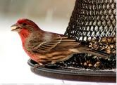

I'M A CALIFORNIA TOWHEE GLAMOUR BIRD
I may be prompted by a tireless knocking at your window or car mirror.

I'M A FINCH BIRD
I build my nest in cavities, buildings, hanging plants, and other cup-shaped outdoor decorations.

I'M A NORTHERN MOCKINGBIRD
My mimicking ability, as reflected by name means 'many-tongued mimic'.

I'M A SONG SPARROW BIRD
I use melodious and fairly complex song to declare ownership of territory and to attract females.

I'M A WESTERN MEADOWLARK
My buoyant, flute-like melody can brighten anyone's day.

I'M A WESTERN SCRUB JAYBIRD
I am a fixture of dry shrublands, oak woodlands, and conspicuous visitors to backyards.